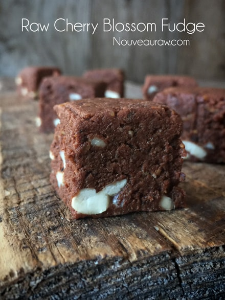
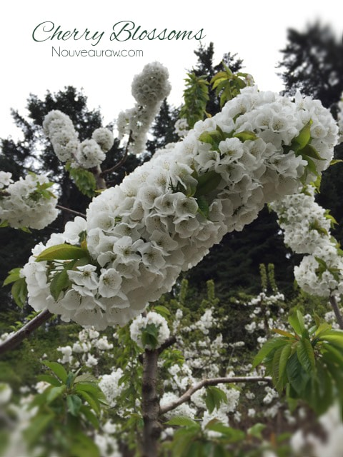

Cherry Blossom Fudge

~ raw, vegan, gluten-free ~
One day I was traveling through the Portland airport when I all of a sudden had to stop for an ice tea. Have you ever just had something stop you in your tracks? I was parched and darn near spitting dust balls. Traveling has a way of dehydrating you.
This was when I stumbled upon this new amazing tea… Cherry Blossom Tea. I have since found it online, click on the link above or within the ingredient list.
Cherry Blossoms Take me Away!
This may sound odd, but the first thing I do with food is… smell it. I never use to be this way; perhaps this habit helped to form my ever-growing ability to discern spices and flavorings in food.
So, as you can guess, upon receiving my can of Cherry Blossom tea, I removed the lid and took a loooong whiff… aaaah the sweet cherry flavor, and the light grassy aroma was and is intoxicating. I encourage you to use this tea, but you can always substitute your favorite tea. I also fell in love with The Republic of Tea, Double Dark Chocolate Mate Tea. There are far too many teas out there!
As if you really need any suggestions on how to enjoy this fudge… I do want to share an ice cream that I made incorporating the fudge. Delish! Raw Cherry Blossom Fudge Ice Cream. I do suggest that you slice the fudge into small 1-2 bite-sized pieces. They are rich, and you don’t want to overdo it causing a tummy ache. I won’t be held responsible. :)
Makes 12-24 brownies, depends on how big your eyes are
- 4 cups (553 g) Medjool dates, pitted – get weight
- 1/2 cup (68 g) dried cherries, divided
- 1/2 cup raw cacao butter, melted
- 1/2 cup raw cacao powder
- 1/4 cup maple syrup
- 1/4 cup raw ground flax seeds
- 1 tsp almond extract
- 6 Cherry Blossom tea bags, open bags and use contents
- 1/4 tsp Himalayan pink salt
- 1 cup cashews, soaked & dehydrated, roughly chopped
Preparation:
- Prepare the 8×8, straight-edged pan by lining it with plastic wrap. This will help when it comes time to remove the fudge. Set aside.
- To make flax meal, add flax seeds to spice or coffee grinder and process to a powder.
- In the food processor, fitted with the “S” blade, combine the dates, 1/4 cup dried cherries, cacao butter and powder, maple syrup, flax, almond extract, tea contents (only), and salt. (shew, still with me?) Process until it starts to get really thick, almond brownie/fudge-like in texture.
- Best to use dates at room temperature, for blending purposes.
- If the dates are really dry, place them in a bowl and add enough hot water to cover them. Let them soak for about 15 minutes. Drain the soak water and hand-squeeze the excess water from them.
- Remove the dough and place in a large bowl.
- Add the chopped chews and the remaining dried cherries and work the dough by hand.
- I suggest rubbing coconut oil on your hands first. This will help cut down on the “stickage.”
- Then using the palm of your hand, make folding motions with the dough, so the cherries and nuts get evenly distributed.
- Press the dough into the pan, firm and evenly.
- Cover and put the fudge in the freezer and let it sit for a least an hour or overnight.
- Cut into desired sizes.

Speaking of cherry blossoms above… this is a picture that I took
while Bob and I went for a walk throughout the orchard. The cherry
blossoms are so gorgeous!

© AmieSue.com